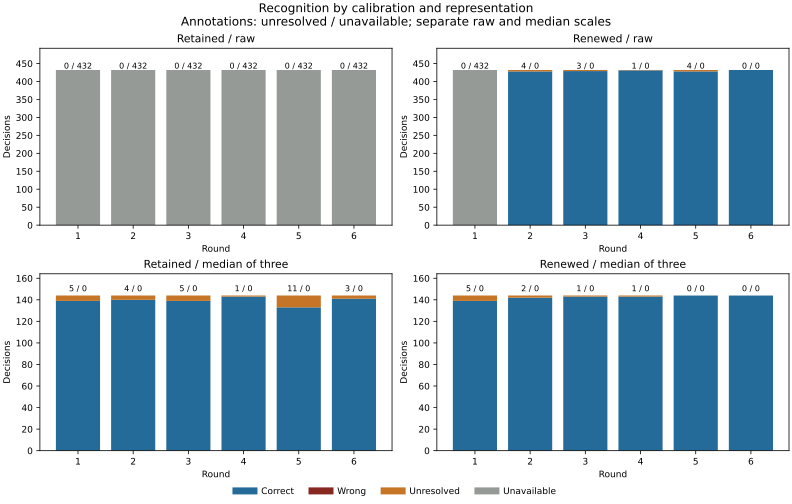
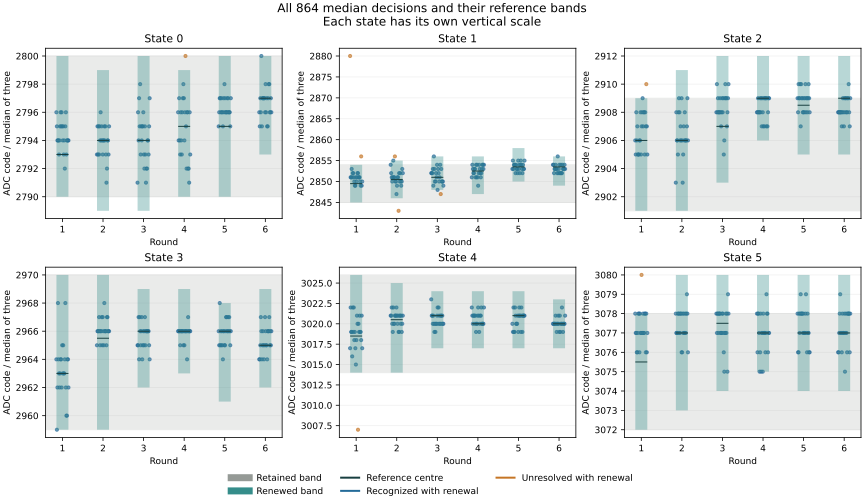
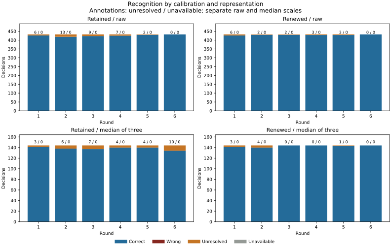
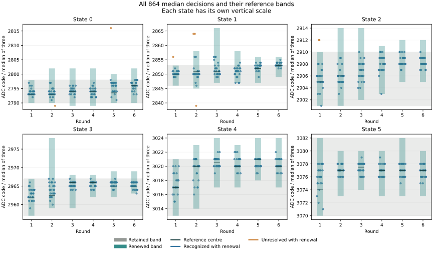
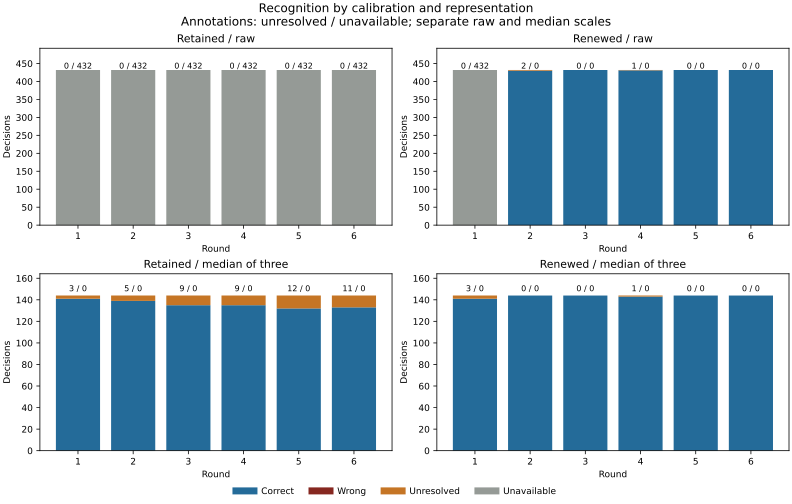
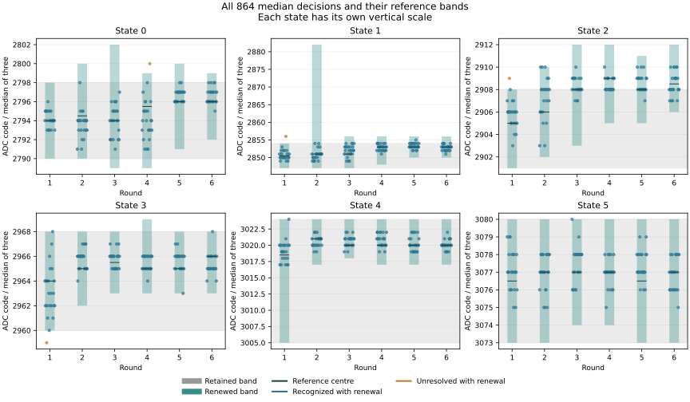

Question and rationale
Does renewing calibration improve recognition under unchanged electrical requests, and does recognition over three acquisitions reduce the effect of brief raw-code excursions?
The held-request return recorded a state-3 value of 3,008 between readings near 2,963. Its training median was 2,963; state 4's was 3,018. A similar excursion occurred in the second transition boot. The resulting extrema intervals overlapped. Six other readings were unresolved, including readings late in holds. These observations motivate separate comparisons of calibration age and recognition duration. They do not identify temperature, electrical interference or ADC behaviour as the cause.
Declared method
Three separate boots with the same method and unique recorded identities. Each boot has six rounds of 648 observations: six reference holds of 36 readings, then six validation holds of 72 readings. Total per boot: 3,888 raw observations, including 1,296 reference and 2,592 validation readings. All numbers in this account are decimal unless prefixed.
Retain control codes 90, 93, 96, 99, 102 and 105; guard two raw counts; 1,000 microsecond pre-ADC delay; the existing clear/trigger/status/read sequence, operating checks and restoration. No additional PMIC register operation or enlarged control range is introduced.
In zero-based round b, reference hold p requests state (p+b) modulo six; validation requests (p+b+3) modulo six. Each state occupies every hold position once over the six rounds. Direction stays ascending with wraparound. Every adjacent hold changes request. Order is deterministic, so it does not establish independence from time or previous-state effects.
At the end of each reference phase, SEIGRASM derives two calibrations: extrema of all 36 raw readings per state, and extrema of 12 medians from consecutive, non-overlapping groups of three. Each interval uses the unchanged two-count guard. Overlap rejects the complete calibration for that representation. Every reference value remains recorded.
For subsequent validation, compare the first round's calibration, retained throughout the boot, with the current round's calibration. Neither is updated from validation. A rejected renewal remains unavailable for that round, without fallback to an older calibration. The first round has identical retained and current calibrations and is an implementation control; renewal comparisons concern rounds 2 through 6.
Each raw validation reading is classified against both raw calibrations. Every complete group of three is also reduced to its median and classified against both median calibrations. All three readings come from the same held request, including the first group after a change. There are 864 median decisions per boot, including 720 in rounds 2 through 6. Raw and median decisions have different denominators and temporal meaning.
Predefined assessment
Acquisition and recorded computation: recover all 3,888 rows in the declared order, all control and paired-result diagnostics, six restorations, final restoration and pin release. Require complete status sequences 0 → 1 → 0, successful operating checks, and byte-exact reconstruction of every recorded calibration and decision. Partial acquisition cannot pass.
Recognition: assess retained/raw, renewed/raw, retained/median and renewed/median separately. Each arm requires its needed calibrations to be accepted and all its scheduled decisions to be correct. Report wrong, unresolved and unavailable outcomes independently; an absent burst decision before its third reading is unscheduled, not an unavailable scheduled decision. The complete recognition criterion requires all four arms to pass.
Renewal: within each representation, compare paired outcomes on identical validation observations from rounds 2 through 6. Report every outcome transition. A descriptive improvement requires more correct decisions, fewer unresolved-plus-unavailable decisions and no increase in wrong decisions. Separate effects of an initially rejected calibration from changes following initially accepted calibration. Report each boot separately; require the same improvement direction in all three before calling it a repeated benefit. No significance claim follows from treating consecutive readings as independent.
Duration: report each median decision beside its three constituent raw outcomes. Retain extrema, medians, excursions, timing, calibration age, raw thermal observations and acquisition latency. Measure the interval from the first contributing selection readback to completion of the median decision. Median success qualifies a three-acquisition decision only. No energy measurement is available in this protocol.
No retrospective band widening, warm-up removal, selective retry or tuning of burst length. Historical returns informed this declared candidate; prospective returns assess it. Continuous temperature compensation, electrical-state relocation and independent analog conversion freshness are outside this comparison.
SEIGRASM execution and recording
Literal AArch64 SEIGRASM instructions own acquisition, median calculation, calibration, classification and recording after entry. The 56-instruction balanced sequence and 160-instruction sample observer extend the existing held-request acquisition. The observer delegates the existing supervised acquisition, then computes reference or recognition outputs before returning. Existing voltage, ADC, supervision, restoration and SD instructions are unchanged. Recognition receives only a calibration table and observed value; requested state labels are used afterward for assessment. Reference labels arrange the calibration input.
The SGDATA01 reserved-sector journal retains original 64-word raw rows, original per-round raw bands, two calibration records per round, and four decision slots per validation row. Each slot preserves status, recognized identity and availability. Median values, availability and decision counters are recorded. Section 3 starts with 192 original band words, followed by 192 comparison-calibration words and 16 words per attempted validation reading. Its recorded length follows the attempted prefix; unattempted decision slots are not written. Maximum section length is 41,856 words. The complete run occupies at most 29,098 of 32,704 reserved journal sectors, leaving 3,606 reservations empty. PC packaging copies literal instruction bytes. The evidence reader independently reconstructs the returned computation; they do not supply target decisions.
The existing BCM2712 ROM/EEPROM loading path and initial hardware state remain dependencies. This experiment does not replace boot firmware or establish exclusive PMIC ownership. Matching result-register reads do not independently prove analog freshness. Known requested control codes provide operational reference labels, not calibrated physical voltage standards.
| Structure | Fields |
|---|---|
| Calibration, 16 words | 0–11: six lower/upper pairs; 12: status; 13: availability; 14: completion counter; 15: reserved zero. Raw calibration precedes median calibration in each round. |
| Decision, 16 words | 0–2: retained/raw; 3–5: renewed/raw; 6–8: retained/median; 9–11: renewed/median; 12: median value; 13: median availability; 14: decision completion counter; 15: reserved zero. |
| Decision triple | Status, recognized identity, availability. Status 0: recognized; 5: unresolved; 6 with availability zero: unavailable calibration. Median slots before the third reading are unscheduled and remain zero. |
All calibration and decision buffers are zero-initialized and have explicit bounds in the image. Calibration failures preserve their status. Sample failure returns unchanged, preserves the attempted prefix and enters the existing restoration path. Supplied-device checks exercise unsigned median arithmetic, sequence balance, drift, isolated and sustained excursions, rejected calibration, partial acquisition and native GPIO/SD recording. They are implementation checks, not physical observations.
Results across boots
All three planned boots have returned. Renewal met the declared repeated-improvement condition in both representations; none of the boots met the full recognition criterion. All 11,664 raw observations and their recorded comparisons were recovered. Acquisition diagnostics met their criterion on every boot. No wrong assignment occurred in any of the four recognition paths.
On the same 720 median decisions after round 1 in each boot, renewal improved recognition from 674 to 719 correct in boot 1, reducing 46 unresolved outcomes to one; from 689 to 715 in boot 2, reducing 31 to five; and from 696 to 716 in boot 3, reducing 24 to four. The complete renewed-median counts were 860/864, 856/864 and 855/864. These are paired within-boot comparisons on one apparatus; consecutive readings are not independent boots.
| Boot | Retained raw | Renewed raw | Retained median | Renewed median |
|---|---|---|---|---|
| 1 | 0 / 0 / 0 / 2,592 | 2,157 / 0 / 3 / 432 | 815 / 0 / 49 / 0 | 860 / 0 / 4 / 0 |
| 2 | 2,555 / 0 / 37 / 0 | 2,576 / 0 / 16 / 0 | 830 / 0 / 34 / 0 | 856 / 0 / 8 / 0 |
| 3 | 0 / 0 / 0 / 2,592 | 2,148 / 0 / 12 / 432 | 835 / 0 / 29 / 0 | 855 / 0 / 9 / 0 |
The pooled renewed-median total is 2,571 correct and 21 unresolved out of 2,592 decisions. The paired renewal comparison after round 1 contains 93 unresolved-to-correct changes and two correct-to-unresolved changes. The three-boot assessment preserves the distinct denominators and initially rejected raw calibrations.
Boot 3 results · Boot 3 observations · Boot 2 results · Boot 1 results · Interpretation across boots.
Boot 3 results
Candidate F34EB0FBBAF8 returned all 3,888 observations. The first raw calibration rejected overlapping state-3/state-4 intervals; the remaining five raw calibrations and all six median calibrations were accepted. Retained raw recognition therefore remained unavailable for all 2,592 validation readings. Renewal recovered raw recognition after the next reference phase, producing 2,148 correct, 12 unresolved and 432 unavailable outcomes. No wrong assignment occurred.
Retained median recognition produced 835 correct and 29 unresolved decisions; renewal produced 855 correct and 9 unresolved. After round 1, the paired median counts were 694 correct with both calibrations, 22 unresolved-to-correct, two correct-to-unresolved and two unresolved with both. This met the descriptive improvement condition while retaining the regressions.
All six restoration attempts completed; final restoration and pin release reported zero status. Recorded raw acquisition lasted 136.157407 seconds; the recorded interval from trial start to the final section was 1,281.811452 seconds. Three-reading decisions spanned 101.377–101.684 ms. These internal intervals do not independently measure the external powered window.
Boot 3 calibration and recognition
The initial raw ranges were 2,960–3,008 for state 3 and 3,007–3,040 for state 4. Their medians were 2,963 and 3,018. State 3 reached 3,008 at observation 141. The guarded intervals overlapped, although no identical raw code appeared in both reference sets. Repeated interval overlap does not establish temperature, interference or ADC behaviour as its cause.


| Ordinal | Round | State | Raw triple | Median | Renewed band |
|---|---|---|---|---|---|
| 335 | 1 | 4 | 3007, 3020, 3007 | 3007 | 3014–3026 |
| 398 | 1 | 5 | 3078, 3080, 3080 | 3080 | 3072–3078 |
| 506 | 1 | 1 | 2880, 2880, 2847 | 2880 | 2845–2854 |
| 569 | 1 | 1 | 2849, 2864, 2856 | 2856 | 2845–2854 |
| 641 | 1 | 2 | 2910, 2907, 2911 | 2910 | 2901–2909 |
| 1106 | 2 | 1 | 2856, 2880, 2850 | 2856 | 2846–2855 |
| 1127 | 2 | 1 | 2839, 2851, 2843 | 2843 | 2846–2855 |
| 1712 | 3 | 1 | 2850, 2847, 2847 | 2847 | 2848–2856 |
| 2204 | 4 | 0 | 2791, 2800, 2800 | 2800 | 2790–2799 |
The two renewed-median regressions occurred at ordinals 1,712 and 2,204. Their medians, 2,847 and 2,800, remained inside the retained bands but lay outside the renewed bands. Three of the nine unresolved medians came from triples individually recognized by accepted raw bands. Conversely, ten groups containing unresolved raw readings produced a recognized median. The transformations change both the observed value and its reference distribution.
Boot 3 acquisition and evidence
Two complete 64 MiB reads matched: 32eb9cb028472399507856fb8d28a0d61df8ff065bdb064a4eebace163d7b756. The journal contained 29,098 occupied sectors and 3,606 unchanged empty reservations. Every native calibration and recognition decision was reconstructed from the recorded readings.
Boot files and partition geometry were unchanged. Seven sectors outside the native journal differed from the preparation image; the compared dirty indicators were unset. Windows reported FAT32 / Healthy / OK. This comparison does not establish the writer or cause of those outside-journal changes, or constitute a complete medium-health assessment.
Raw capture · Repeated-read metadata · Decoded acquisition · Four-path assessment · Detailed observations · Boot-volume comparison · Three-boot assessment · Run conditions · Artifact hashes.
Boot 2 results
Candidate ADF64FDD07BA returned all 3,888 observations in 29,098 journal sectors, with 3,606 reservations empty. All twelve calibrations were accepted. Control readbacks, paired ADC results, clear/trigger/cleanup status sequences and operating checks met the diagnostic criterion. Six round restorations, final restoration and pin release reported success. Every native calibration and recognition decision was reconstructed from the returned observations.
| Calibration / representation | Correct | Wrong | Unresolved | Unavailable |
|---|---|---|---|---|
| Retained / single reading | 2,555 | 0 | 37 | 0 |
| Renewed / single reading | 2,576 | 0 | 16 | 0 |
| Retained / median of three | 830 | 0 | 34 | 0 |
| Renewed / median of three | 856 | 0 | 8 | 0 |
Paired comparison, rounds 2–6: raw renewal changed 29 readings from unresolved to correct and eight from correct to unresolved; two remained unresolved and 2,121 remained correct. Thus unresolved raw readings fell from 31 to 10 among 2,160 paired observations. Median renewal changed 26 decisions from unresolved to correct, left five unresolved and kept 689 correct, reducing unresolved outcomes from 31 to five among 720 paired decisions. Both initial calibrations were accepted, so both comparisons concern renewal of an operative calibration.
The acquisition counter interval was 136.174 seconds; the trial-to-final-section interval was 1,281.664 seconds. Median decision latency was 101.414–101.700 milliseconds. None of these counter intervals independently measures analog conversion time or the full external powered window.
Boot 2 calibration and recognition


The state-3/state-4 reference overlap observed in boot 1 did not recur. In the initial reference phase, state 3 spanned 2,959–2,976 and state 4 spanned 3,007–3,024. With the declared guard, their bands were 2,957–2,978 and 3,005–3,026. All six raw calibrations retained separated bands.
| Round | State | Hold readings | Constituent raw codes | Median | Reference band |
|---|---|---|---|---|---|
| 1 | 1 | 7–9 | 2856, 2856, 2852 | 2856 | 2846–2853 |
| 1 | 2 | 22–24 | 2904, 2912, 2912 | 2912 | 2901–2910 |
| 1 | 2 | 28–30 | 2944, 2912, 2906 | 2912 | 2901–2910 |
| 2 | 0 | 70–72 | 2792, 2789, 2789 | 2789 | 2790–2802 |
| 2 | 1 | 4–6 | 2864, 2880, 2849 | 2864 | 2845–2858 |
| 2 | 1 | 19–21 | 2880, 2849, 2864 | 2864 | 2845–2858 |
| 2 | 1 | 34–36 | 2839, 2839, 2850 | 2839 | 2845–2858 |
| 5 | 0 | 4–6 | 2816, 2816, 2797 | 2816 | 2790–2800 |
Fourteen three-reading groups containing unresolved raw observations were recognized under renewed median calibration. Conversely, seven of the eight unresolved renewed medians came from groups with three correctly recognized raw readings. The remaining group contained two consecutive values of 2,816, both unresolved as raw readings; its median was also 2,816. A three-reading median therefore retained a repeated excursion in this group, while its separately estimated bands missed some groups covered by the raw calibration.
Recorded CPU frequency ranged from 1,499,970,782 to 1,500,029,103 Hz. Raw thermal register values ranged from 67,308 to 67,335. These register observations do not identify the cause of the recognition changes or establish calibrated temperature.
Boot 1 results
The full recognition criterion was not met. Candidate F999AF774D4F returned all 3,888 observations in 29,098 journal sectors; 3,606 reservations remained empty. All control readbacks, paired ADC results, clear/trigger/cleanup status sequences and operating checks met the declared diagnostic criterion. Six round restorations, final restoration and pin release reported success. Every saved calibration and recognition decision was independently reconstructed from the returned reference and validation readings.
| Calibration / representation | Correct | Wrong | Unresolved | Unavailable |
|---|---|---|---|---|
| Retained / single reading | 0 | 0 | 0 | 2,592 |
| Renewed / single reading | 2,157 | 0 | 3 | 432 |
| Retained / median of three | 815 | 0 | 49 | 0 |
| Renewed / median of three | 860 | 0 | 4 | 0 |
The first raw calibration was rejected by overlapping state-3 and state-4 intervals. The remaining five raw calibrations and all six median calibrations were accepted. Retaining the rejected raw calibration made all 2,592 corresponding decisions unavailable. Renewal restored raw recognition after the first round, with three unresolved readings. Each raw arm contains 2,592 decisions; each median arm contains 864 decisions spanning three acquisitions each.
Paired renewal comparison, rounds 2–6: retained median calibration recognized 674 of 720 decisions, with 46 unresolved; renewed calibration recognized 719, with one unresolved. Of those pairs, 674 were correct under both, 45 changed from unresolved to correct, and one remained unresolved. There were no wrong assignments. Both representations met the predefined descriptive improvement condition, but the raw comparison concerns recovery from an initially rejected calibration. These are the first of the three planned boot results.
Recorded acquisition duration was 136.159 seconds; the trial-to-final-section counter interval was 1,281.638 seconds. The median decision interval from first contributing selection readback to decision completion was 101.388–101.682 milliseconds. These intervals do not measure the complete external powered window or independently locate analog conversion time.
Boot 1 calibration and recognition


Initial state-3 raw readings spanned 2,960–3,008, while state 4 spanned 3,007–3,040; their medians were 2,963.5 and 3,018.5. State 3 reached 3,008 at its 19th reference reading, between 2,964 and 2,963. The extrema intervals overlapped although the two recorded sets contained no identical raw code. Their median-derived bands were separated: 2,960–2,968 and 3,005–3,024.
| Round | State | Hold readings | Constituent raw codes | Median | Reference band |
|---|---|---|---|---|---|
| 1 | 3 | 13–15 | 2961, 2959, 2955 | 2959 | 2960–2968 |
| 1 | 1 | 46–48 | 2856, 2849, 2880 | 2856 | 2847–2854 |
| 1 | 2 | 16–18 | 2909, 2903, 2912 | 2909 | 2901–2908 |
| 4 | 0 | 55–57 | 2800, 2797, 2800 | 2800 | 2789–2799 |
The three renewed-raw exceptions occurred at ordinals 1,030, 1,285 and 2,255: codes 2,816, 2,976 and 2,845. Their three-reading groups were recognized under renewed median calibration. Conversely, the final row of the table contained three correctly recognized raw readings while its median exceeded the narrower median band by one count. This preserves the cost as well as the benefit of the representation change.
Recorded CPU frequency ranged from 1,499,970,782 to 1,500,029,660 Hz. Raw thermal register observations ranged from 67,305 to 67,331. The latter are recorded without conversion to temperature; neither their association with time nor this single return identifies temperature as the cause of recognition changes.
Interpretation across boots
The three planned boots complete the declared renewal comparison. Reference renewal met the repeated-improvement condition in both representations. For raw recognition, boots 1 and 3 recovered availability after initially rejected calibration; only boot 2 compared two accepted raw calibrations throughout. That boot included eight correct-to-unresolved changes after renewal.
All initial median calibrations were accepted. After round 1, renewal reduced unresolved outcomes from 46 to one, from 31 to five and from 24 to four. Across those paired comparisons, 93 decisions changed from unresolved to correct and two changed from correct to unresolved. Thus renewal improved the net counts in all three boots, without guaranteeing an improvement for every band or observation.
The complete renewed-median results still contained four, eight and nine unresolved decisions. Median grouping recognized some raw excursions but also produced narrower reference bands that excluded otherwise recognized raw triples. The measurements support continued use and investigation of reference renewal; they do not qualify complete six-state recognition or explain the physical cause of the variations. Independent analog freshness remains unproven.
All three returns, their source snapshots and the original declared protocol are preserved. The SD retains the third return; no successor image has been installed.
Boot 1 acquisition and evidence
The selected SD was opened read-only by the acquisition tool. The initial two 64 MiB reads differed in 32,768 bytes across 64 sectors: even LBAs 65,536 through 65,662, outside the experiment journal. The journal and both boot files were identical. A repeated pair matched each other and the initial first read byte for byte. Both distinct captures and the acquisition metadata are preserved; the cause of the intermediate discrepancy is unresolved.
The stable capture retained both prepared boot files unchanged. Windows reported FAT32 / Warning / Full Repair Needed, and the captured boot-volume status octet and FAT entries contained dirty markers. Nine sectors outside the journal differed from the prepared image. No filesystem repair, format or SD write was performed during acquisition. These observations do not establish the source of the markers or qualify the medium's overall health.
The external power-off interval and powered duration were prescribed as at least five minutes and one 30-minute boot. Exact external timings and boot count were not separately reported for this return; recorded target intervals are stated above. Independent analog conversion freshness and the target's acknowledgement of its last sector readback remain unproven.
Stable raw capture · Repeated-read acquisition · Decoded observations · Native decision assessment · Paired observations and exceptions · Initial read comparison · Distinct intermediate capture · Boot-volume assessment · Windows volume status · Artifact hashes.
Boot 2 acquisition and evidence
Two complete 64 MiB reads matched byte for byte. The returned identity matched ADF64FDD07BA, and both boot files were unchanged. Windows reported FAT32 / Healthy / OK; the captured boot-volume status and FAT entries did not carry the dirty markers present in boot 1. Seven sectors outside the journal differed from the prepared image. The acquisition tool used read-only access.
The prescribed external procedure remained at least five minutes powered off followed by one uninterrupted 30-minute boot. Exact external timings and boot count were not separately reported for this return. Recorded target intervals are given above; the target's acknowledgement of its final sector readback remains unproven.
Raw capture · Repeated-read acquisition · Decoded observations · Native comparison assessment · Constituent readings and exceptions · Boot-volume assessment · Windows volume status · Artifact hashes.
Preparation and procedure
Boot 3: candidate F34EB0FBBAF8 was installed and readback-verified. The declared method, all instructions, acquisition settings and boot configuration are unchanged. Only the payload identity header differs from boot 2. All 79 source files match the existing 222-test validation record. All 32,704 journal reservations were empty in the prepared image. The pre-write backup matched boot 2's preserved capture; reopened-device readback of all 67,108,864 bytes matched the new image. Windows reported FAT32 / Healthy / OK after installation. The third return is preserved and assessed above; the declared series is complete.
Boot 3 preparation: run identity and unchanged settings; image manifest; installation readback; artifact hashes; original protocol.
Boot 2: candidate ADF64FDD07BA was installed and readback-verified. The declared method, all instructions, acquisition settings and boot configuration are unchanged from boot 1. Only the payload identity header differs. All 79 source files match the existing 222-test validation record. All 32,704 journal reservations were empty in the prepared image. The pre-write backup matched boot 1's preserved capture; reopened-device readback of all 67,108,864 bytes matched the new image. Windows reported FAT32 / Healthy / OK after installation. Boot 2 has returned and is assessed above. Its capture is preserved alongside the other two returns.
Boot 2 preparation: repeat conditions and byte comparison, unchanged declared protocol, image manifest, SD write and readback, artifact hashes.
Candidate F999AF774D4F was installed and readback-verified. All 222 supplied-device checks passed with 79 source files unchanged during validation. All 32,704 journal reservations were empty in the prepared image. The pre-write backup matched the preserved held-request return. A reopened-device readback of all 67,108,864 bytes matched the prepared image. Windows reported FAT32 / Healthy / OK after installation. Boot 1 of 3 has returned and is assessed above. The returned image is preserved in its evidence archive.
Boot 1 preparation archive: declared protocol, image manifest, execution checks, SD write and readback, artifact hashes. The archive contains the exact SEIGRASM sources, acquisition reader and preparation image for this boot.
Use the same power supply and cooling arrangement. Leave the Pi powered off for at least five minutes; ten minutes is suitable. Insert the prepared SD while power is off, run one uninterrupted boot for 30 minutes, then power off before removing the SD. Return it for acquisition before any subsequent boot. Each later boot receives its own identity after the preceding return has been preserved.
Completion is determined from returned records. The powered window includes raw acquisition and journal persistence; it is not the measured acquisition interval.